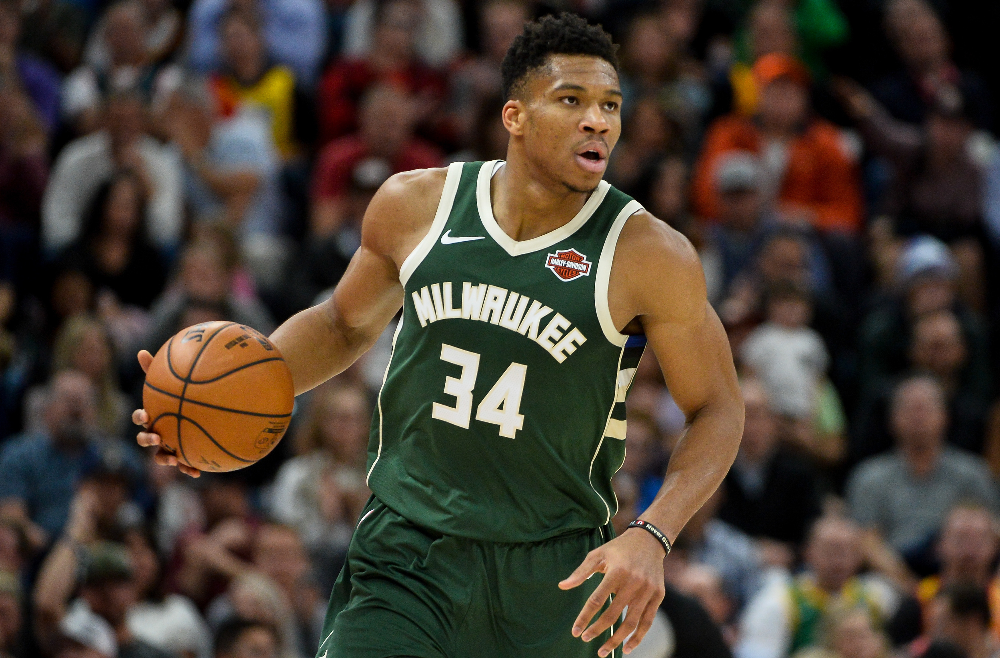
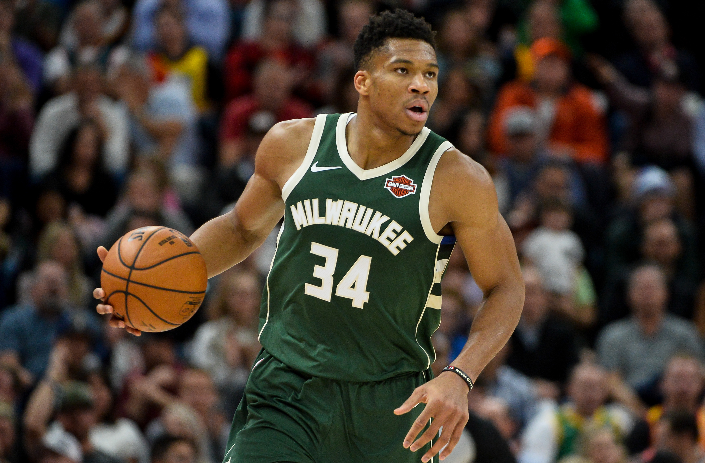
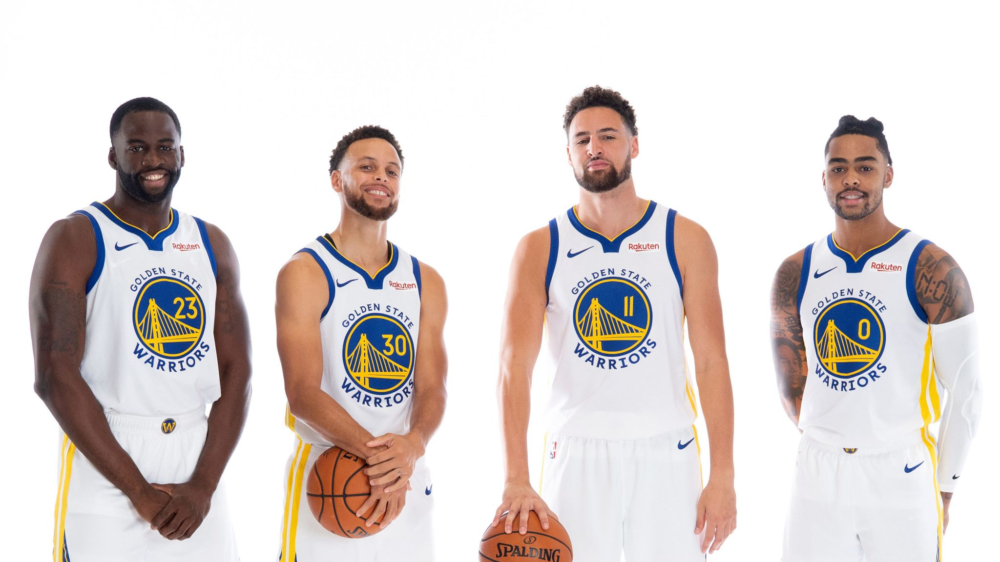
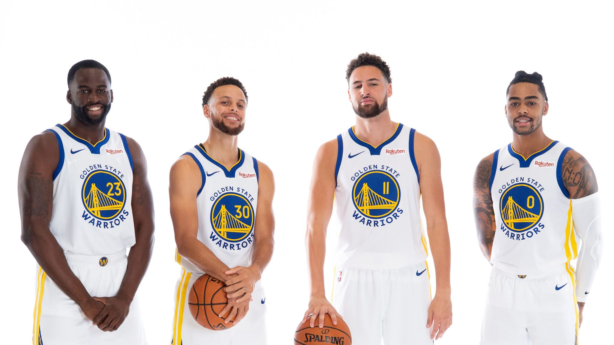
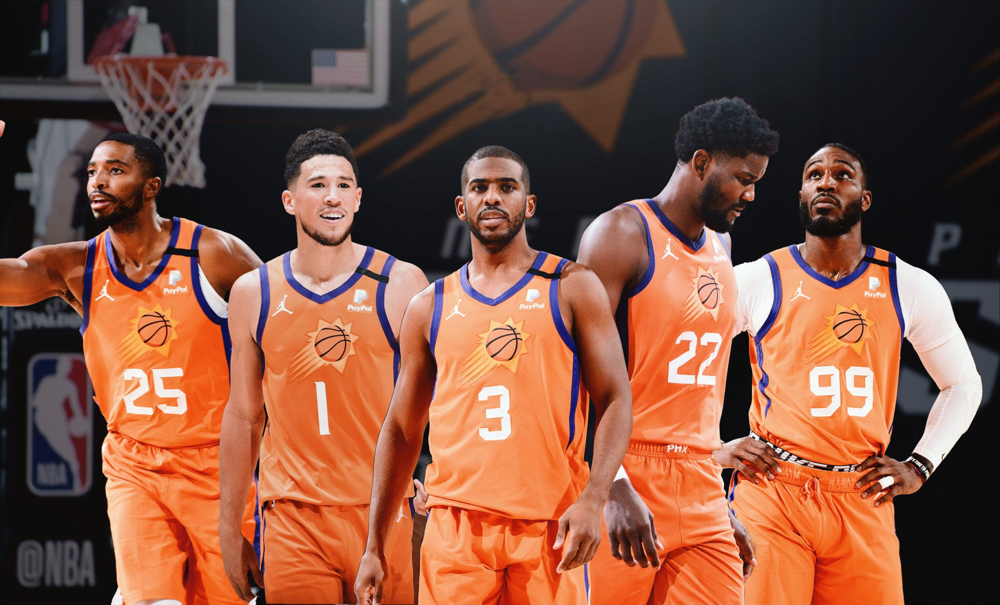
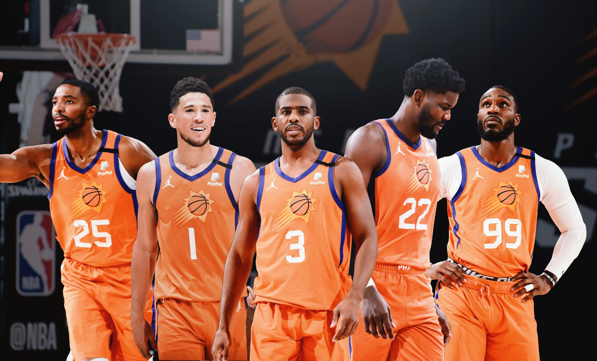

ברוקלין נטס
ברוקלין הייתה הפייבוריטית של רבים לפני תחילת העונה. אחרי שבעונה שעברה היו רחוקים כ-2 סנטימטרים
מלהדיח את האלופה,
וזאת ללא קיירי ארווינג, ועם הארדן על רגל אחת, העונה דברים פחות מתחברים עבור הנטס. שחקני המשנה שהיו
מצוינים בשנה
שעברה נעלמו, ובראשם בלייק גריפין. הארדן לא מצליח לגלות יציבות, וקיירי? לא בטוח שבא לו לשחק כדורסל.
ובכל זאת,
כשיש לך את קווין דוראנט, בתקווה שיהיה בריא בפלייאוף, קשה שלא לקחת אותם בחשבון. אם הארדן יצליח
להתייצב או שקיירי
סוף
סוף יתחסן (או שהחוקים בניו-יורק ישתנו, מה שנראה יותר סביר כרגע) ודוראנט בכושר טוב - ברוקלין בוודאי
תיתן פייט לכל
קבוצה שתתמודד מולה.

מילווקי באקס
"Don't ever underestimate the heart of a champion" אומר המשפט השחוק.
ובכל זאת, אי אפשר בלי לדבר על האלופה הנוכחית. נראה שמילווקי מעבירה את העונה הסדירה בכיף, נהנית ממעמד
האלופה שלה,
ולמרות זאת, היא נמצאת שם - עם אותו מספר נצחונות כמו המקום הראשון במזרח. אבל מה שיותר חשוב זה שהם
הוכיחו בעונה
שעברה שיש להם את היכולת לעשות את זה גם בפלייאוף - יאניס נתן את אחת מהופעות הגמר הטובות בכל הזמנים עם
50 נקודות
במשחק האליפות, מידלטון עם כמה רגעי קלאץ' חשובים מאוד וגם ג'רו הולידיי עם כמה הופעות משובחות. אם
יגיעו בריאים
לפלייאוף הם יקשו על כל יריבה שיפגשו.
 

גולדן סטייט ווריוס
אחרי שנתיים בינוניות, לאחר עזיבתו של דוראנט, ועם הפציעות הקשות שעבר קליי תומפסון, הווריוס נראים
מוכנים
לחזור לגמר. עוד לפני חזרתו של קליי, זה נראה שלדריימונד גרין חזר החשק לשחק ברצינות, וזה מתבטא בעיקר
במשחק ההגנה המשודרג העונה. ג'ורדן פול מתפתח להיות שחקן שלא נופתע לראות באול-סטאר בקרוב מאוד. וויגינס
מצא סוף סוף את מקומו בליגה, גארי פייטון השני משלים נהדר וכמובן, סטף קארי, שלתקופה ארוכה בעונה הזו,
נראה כמו המועמד המוביל ל-MVP.
מהמקום השני במערב, ובליגה כולה, רק אחרי הסאנס, אף אחד לא יהיה מופתע אם הווריוס יהיו אלופים שוב.
 

פיניקס סאנס
בעונה שעברה הרבה ייחסו את ההגעה של פיניקס לגמר לפציעות של הקבוצות האחרות, אבל
הסאנס מוכיחים השנה שהם הדבר האמיתי. המאזן הטוב בליגה, כריס פול, בגיל 37, אולי בשיאו,
מוכיח למי שעדיין מפקפק שהוא מהפוינט-גארדים הטובים בהיסטוריה. דווין בוקר ממשיך להיראות כמו סופרסטאר
אמיתי בליגה, ולמען האמת - קשה למצוא טענה אמיתית נגדם חוץ מהעובדה שהם עדיין לא
הניפו את הגביע. האם השנה סוף סוף כריס פול יעשה את זה ויוריד את הכוכבית מאחת הקריירות הטובות שראינו
בליגה?
התשובות ביוני.
 
